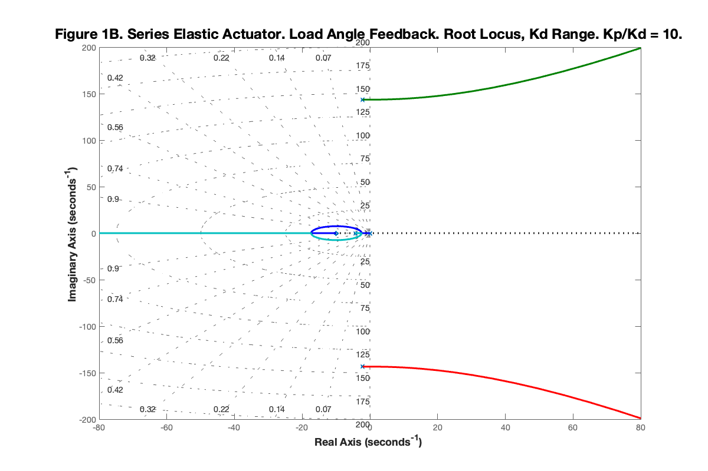
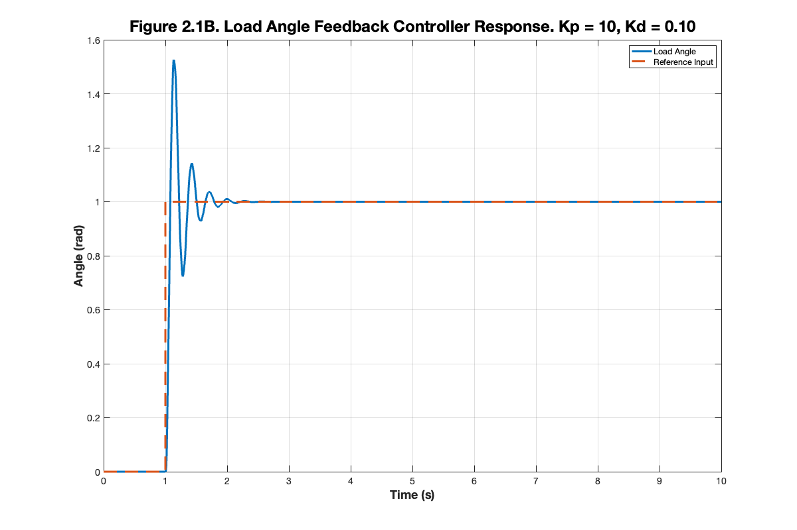
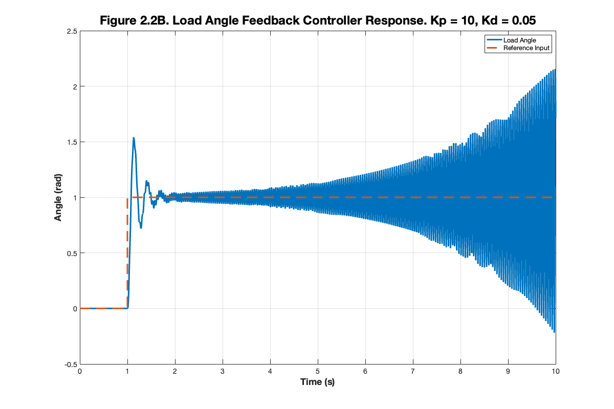

ROB599_HW4_PB
Simiulating a PD Controller with Load Angle Feedback for Series Elastic Actuator.
Contents
Clean Up
clear clc
Problem 1B
Deriving the State Space Representation of the System.
Define System Variables
% Inertia Terms syms Jm Jl % Damping Terms syms Bm Bl % Elastic Term syms k % State Variables syms theta_m theta_m_dot theta_m_ddot syms theta_l theta_l_dot theta_l_ddot syms u % Control Terms syms kp kd theta_cmd
Define EOMs
eq1 = Jm*theta_m_ddot + Bm*theta_m_dot - k*(theta_l - theta_m) == u;
eq2 = Jl*theta_l_ddot + Bl*theta_l_dot + k*(theta_l - theta_m) == 0;
eq3 = u == kp*(theta_cmd - theta_l) - kd*theta_l_dot;
% Display Equations
pretty(eq1)
pretty(eq2)
pretty(eq3)
Bm theta_m_dot + Jm theta_m_ddot - k (theta_l - theta_m) == u Bl theta_l_dot + Jl theta_l_ddot + k (theta_l - theta_m) == 0 u == - kd theta_l_dot - kp (theta_l - theta_cmd)
Acquire State Space Representaiton
% State Space Variables syms x1 x2 x3 x4 syms x2_dot x4_dot % Substitute State Space Variables into EOMs eq1_state = subs(eq1, [theta_m, theta_m_dot, theta_l, theta_l_dot, theta_m_ddot], [x1, x2, x3, x4, x2_dot]); eq2_state = subs(eq2, [theta_m, theta_m_dot, theta_l, theta_l_dot, theta_l_ddot], [x1, x2, x3, x4, x4_dot]); u_state = subs(eq3, [theta_m, theta_m_dot, theta_l, theta_l_dot], [x1, x2, x3, x4]); u_state = solve(u_state, u); % Solve for x2_dot eq1_state = subs(eq1_state, u, u_state); x2_dot = solve(eq1_state, x2_dot); x2_dot = simplify(x2_dot); x2_dot = collect(x2_dot, [x1, x2, x3, x4, theta_cmd]); % Solve for x4_dot x4_dot = solve(eq2_state, x4_dot); x4_dot = simplify(x4_dot); x4_dot = collect(x4_dot, [x1, x2, x3, x4, theta_cmd]); % Form state equations x_dot = [x2; x2_dot; x4; x4_dot]; disp("X_dot = "); pretty(x_dot) % Extract A matrix and B vector (x_dot = Ax + B*theta_cmd) A = jacobian(x_dot, [x1; x2; x3; x4]); A = simplify(A); disp("A = "); pretty(A) B = jacobian(x_dot, theta_cmd); B = simplify(B)
X_dot =
/ x2 \
| |
| / k \ / Bm \ k - kp / kd \ kp |
| | - -- | x1 + | - -- | x2 + ------ x3 + | - -- | x4 + -- theta_cmd |
| \ Jm / \ Jm / Jm \ Jm / Jm |
| |
| x4 |
| |
| k / k \ / Bl \ |
| -- x1 + | - -- | x3 + | - -- | x4 |
\ Jl \ Jl / \ Jl / /
A =
/ 0, 1, 0, 0 \
| |
| k Bm k - kp kd |
| - --, - --, ------, - -- |
| Jm Jm Jm Jm |
| |
| 0, 0, 0, 1 |
| |
| k k Bl |
| --, 0, - --, - -- |
\ Jl Jl Jl /
B =
0
kp/Jm
0
0
Problem 2B
Determine the range of kd such that the system is stable using Routh Hurwitz.
param.Jm = 0.0097; param.Jl = 0.0097; param.Bm = 0.04169; param.Bl = 0.04169; param.k = 100; param.kp = 10; A_eval = subs(A, [Jm, Jl, Bm, Bl, k, kp], [param.Jm, param.Jl, param.Bm, param.Bl, param.k, param.kp]); B_eval = subs(B, [Jm, Jl, Bm, Bl, k, kp], [param.Jm, param.Jl, param.Bm, param.Bl, param.k, param.kp]); A_num = vpa(A_eval, 3) B_num = vpa(B_eval, 3)
A_num =
[ 0, 1.0, 0, 0]
[-1.03e+4, -4.3, 9280.0, -103.0*kd]
[ 0, 0, 0, 1.0]
[ 1.03e+4, 0, -1.03e+4, -4.3]
B_num =
0
1030.0
0
0
Acquire Characteristic Equations
Characteristic Equation: det(A - lambda*I) = 0
syms lambda char_poly = det(A_eval - lambda*eye(4)); char_poly = collect(char_poly, lambda); disp('Characteristic Polynomial: '); pretty(vpa(char_poly, 3))
Characteristic Polynomial:
4 3 2
lambda + 8.6 lambda + 2.06e+4 lambda + (1.06e+6 kd + 8.86e+4)
lambda + 1.06e+7
Construct Routh-Hurwitz Matrix
H = getRouthMatrix(char_poly, lambda);
disp('Routh-Hurwitz Matrix: ');
pretty(vpa(H, 3))
Routh-Hurwitz Matrix: / 8.6, 1.06e+6 kd + 8.86e+4, 0, 0 \ | | | 1.0, 2.06e+4, 1.06e+7, 0 | | | | 0, 8.6, 1.06e+6 kd + 8.86e+4, 0 | | | \ 0, 1.0, 2.06e+4, 1.06e+7 /
Compute Principle Minors of Routh-Hurwitz Matrix
principalMinors = computePrincipalMinors(H);
% showFactoredForm(principalMinors, kd);
Solve for Stability Requirements
inequalities = [0 < kd]; for i=1:length(principalMinors) inequality = principalMinors(i) > 0; inequalities = [inequalities, inequality]; end inequalitiesSol = solveRealStrictInequalities(inequalities, kd); disp("Stability Requirements: "); pretty(vpa(inequalitiesSol, 3))
Stability Requirements: kd in real and kd < 0.0835 and -0.0791 < kd and 0.0 < kd and kd < 0.0793
Problem 3B
Acquire the transfer function of the system.
% Define New Variables syms s syms pl_s pm_s r % Solve for Transfer Function theta_l/r H_s = theta_l == (k/(pl_s*pm_s)) * (k*theta_l + (kp + kd*s)*(r-theta_l)); H_s = solve(H_s, theta_l)/r; H_s = simplify(subs(H_s, [pl_s, pm_s], [Jl*s^2+Bl*s+k, Jm*s^2+Bm*s+k])); H_s = collect(H_s, s); disp("Closed Loop Transfer Function"); disp('H_s = '); disp(H_s) H_s_eval = vpa(subs(H_s, [Jm, Jl, Bm, Bl, k], [param.Jm, param.Jl, param.Bm, param.Bl, param.k]), 3); disp('H_s_eval = ');disp(H_s_eval) H_s_eval = vpa(subs(H_s, [Jm, Jl, Bm, Bl, k, kp], [param.Jm, param.Jl, param.Bm, param.Bl, param.k, param.kp]), 3); disp('H_s_eval = '); disp(H_s_eval)
Closed Loop Transfer Function H_s = (k*kd*s + k*kp)/(Jl*Jm*s^4 + (Bl*Jm + Bm*Jl)*s^3 + (Jl*k + Jm*k + Bl*Bm)*s^2 + (Bl*k + Bm*k + k*kd)*s + k*kp) H_s_eval = (100.0*kp + 100.0*kd*s)/(9.41e-5*s^4 + 8.09e-4*s^3 + 1.94*s^2 + (100.0*kd + 8.34)*s + 100.0*kp) H_s_eval = (100.0*kd*s + 1000.0)/(9.41e-5*s^4 + 8.09e-4*s^3 + 1.94*s^2 + (100.0*kd + 8.34)*s + 1000.0)
Problem 4B
Get the Root Locus Plot of the system.
Acquire Open Loop Transfer Function L(s).
% Solve for Open Loop Transfer Function Q_s = theta_l == (k/(pl_s*pm_s)) * (k*theta_l + (10 + s)*r); Q_s = solve(Q_s, theta_l)/r; Q_s = subs(Q_s, [pl_s, pm_s], [Jl*s^2+Bl*s+k, Jm*s^2+Bm*s+k]); % Get the Open Loop Transfer Function SYS = subs(Q_s, [Jm, Jl, Bm, Bl, k], [param.Jm, param.Jl, param.Bm, param.Bl, param.k]); SYS = collect(SYS, s); [num, den] = numden(SYS); num = sym2poly(num); den = sym2poly(den); L_s = tf(num, den); disp('Open Loop Transfer Function'); disp('L(s) = '); pretty(SYS)
Open Loop Transfer Function
L(s) =
1000000000000 s + 10000000000000
-------------------------------------------------------
4 3 2
940900 s + 8087860 s + 19417380561 s + 83380000000 s
Plot the Root Locus Using Open Loop Transfer Function L(s).
figure('Color', 'white', 'Position', [100, 100, 1200, 800]); rlocus(L_s) % confine the plot to the region of interest axis([-80 80 -200 200]); set(gca, 'FontSize', 14); set(findall(gca, 'Type', 'Line'),'LineWidth', 3); sgrid(); title('Figure 1B. Series Elastic Actuator. Load Angle Feedback. Root Locus, Kd Range. Kp/Kd = 10.', 'FontWeight', 'bold', 'FontSize', 24); xlabel('Real Axis', 'FontWeight', 'bold', 'FontSize', 18); ylabel('Imaginary Axis', 'FontWeight', 'bold', 'FontSize', 18); grid on; box on; % Save the figure print(gcf, 'Figure 1B. Root Locus of Motor Angle Feedback.png', '-dpng', '-r300'); % Save as PNG with 300 DPI resolution
Problem 5B
Initialize Simulink Parameters for the System. Adding numerical values of the parameters
Redefining the Numerical Parameters
param.Jm = 0.0097; param.Jl = 0.0097; param.Bm = 0.04169; param.Bl = 0.04169; param.k = 100; param.kp = 10; param.kd = 0.1;
Run the Simulink Model
simOut = sim('ROB599_HW4_P5', 'SimulationMode', 'normal', 'StopTime', '10');
Warning: Solver is encountering difficulty in simulating model 'ROB599_HW4_P5' at time 1.0000000000000036. Simulink will continue to simulate with warnings. Please check the model for errors. Warning: Solver was unable to reduce the step size without violating minimum step size of 3.55271E-15 for 1 consecutive times at time 1. Solver will continue simulation with the step size restricted to 3.55271E-15 and using an effective relative error tolerance of 0.0135238, which is greater than the specified relative error tolerance of 0.001. This usually may be caused by the high stiffness of the system. Please check the system or increase the solver Number of consecutive min steps violation parameter.
Pull The Simulation Results for Plotting.
% Get the Step Response Data (Motor Angle Feedback) motorStepResponseTime = simOut.MotorStepResponse.Time; motorStepResponse = simOut.MotorStepResponse.Data; % Get the Step Response (Load Angle Feedback) loadStepResponseTime = simOut.LoadStepResponse.Time; loadStepResponse = simOut.LoadStepResponse.Data; % Get the Step Response (Reference Input) signalStepResponseTime = simOut.StepInputSignal.Time; signalStepResponse = simOut.StepInputSignal.Data;
Create Figure for Motor Angle Feedback Step Response.
figure('Color', 'white', 'Position', [100, 100, 1200, 800]); plot(motorStepResponseTime, motorStepResponse, 'LineWidth', 3); hold on; set(gca, 'FontSize', 14); plot(signalStepResponseTime, signalStepResponse, '--', 'LineWidth', 3); title('Figure 2.1B. Load Angle Feedback Controller Response. Kp = 10, Kd = 0.10', 'FontWeight', 'bold', 'FontSize', 24); xlabel('Time (s)', 'FontWeight', 'bold', 'FontSize', 18); ylabel('Angle (rad)', 'FontWeight', 'bold', 'FontSize', 18); legend('Load Angle', 'Reference Input'); grid on; box on; % Save motor angle feedback plot print(gcf, 'Figure 2.1B. Motor Angle Feedback Controller Response.png', '-dpng', '-r300');
Create Figure for Load Angle Feedback Step Response.
figure('Color', 'white', 'Position', [100, 100, 1200, 800]); plot(loadStepResponseTime, loadStepResponse, 'LineWidth', 3); hold on; set(gca, 'FontSize', 14); plot(signalStepResponseTime, signalStepResponse, '--', 'LineWidth', 3); title('Figure 2.2B. Load Angle Feedback Controller Response. Kp = 10, Kd = 0.05', 'FontWeight', 'bold', 'FontSize', 24); xlabel('Time (s)', 'FontWeight', 'bold', 'FontSize', 18); ylabel('Angle (rad)', 'FontWeight', 'bold', 'FontSize', 18); legend('Load Angle', 'Reference Input'); grid on; box on; % Save load angle feedback plot print(gcf, 'Figure 2.1B. Load Angle Feedback Controller Response.png', '-dpng', '-r300');
Helper/Debugging Functions
% Display the factored form of the expression function showFactoredForm(expressions, var) factoredForm = sym([]); for i=1:length(expressions) factoredForm = [factoredForm, prod(factor(expressions(i), var, "FactorMode", "real"))]; end for i=1:length(factoredForm) factoredFormEquation = vpa(factoredForm(i), 3) end end